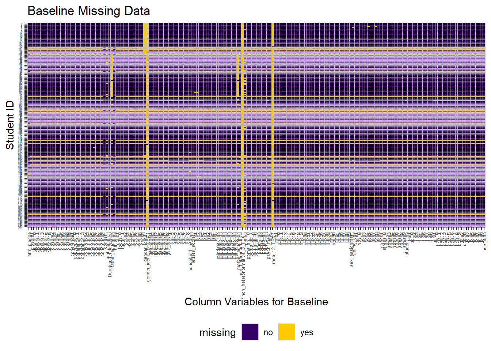

Chapter 4 Missing Values
Our data missing analysis involves 3 data sets: Mood data, Vignette data, and Baseline data. For all visualizations, we confirmed that they are suitible for all types of color blindess: protanomaly, deuteranomaly, tritanomaly, protanopia, deuteranopia, tritanopia, and blue cone monochromacy to effectively read the graph. We confirmed that the visual is accessible to these individuals by plugging our images into https://www.color-blindness.com/coblis-color-blindness-simulator/ and looking at it in all color blind modes.
4.1 Mood Data
There were no missing values for the mood data.
## missing %
## ID 0 0
## Session 0 0
## vignette 0 0
## score 0 04.2 Vignette Data
There were also no missing values for the vignette data.
## missing %
## ID 0 0
## Session 0 0
## vignette 0 0
## score 0 04.3 Baseline Data
Baseline data did have some values missing. For column patterns, we can see that the top 3 variables have the most missing data: ‘non_heteronormative_3_TEXT’, ‘gender_idetity_5_TEXT’ and ‘race_12_TEXT’ This is quite reasonable since these variables are used to store the explanation part if people choose the ‘other’ option for variable ‘non_heteronormative’, ‘gender_idetity’ and ‘race’, respectively. Therefore, the reason why these 3 columns has leading missing values is people choose common options but rarely the ‘other’ option for ‘non_heteronormative’, ‘gender_idetity’ and ‘race’ variables.
## missing %
## non_heteronormative_3_TEXT 201 100
## gender_idetity_5_TEXT 199 99
## race_12_TEXT 197 98
## mother_education 62 31
## father_education 62 31
## period 58 29
## gender_idetity 47 23
## contraceptive 26 13
## loc2 20 10
## household_income 20 10
## loc1 19 9
## loc3 19 9
## coherence6 19 9
## sibling_age 19 9
## focus1 18 9
## focus2 18 9
## focus3 18 9
## focus4 18 9
## focus5 18 9
## focus6 18 9For row patterns, with each row represents a student survey results, we found that there were 17 out of 201 students that only fill out a few of survey question and then quit. In fact, we decide to remove those who did not fill out at least 75% of the survey for data cleaning.
## [1] 4 4 4 6 5 4 5 4 4 4 4 4 4 4 4 5 5 4 4 4 4 4 4 3 179 6
## [27] 180 4 4 4 5 178 5 5 7 5 5 4 7 5 5 5 5 5 5 5 6 178 6 6 5 5
## [53] 5 5 6 5 4 6 5 7 6 5 5 5 5 6 5 5 8 5 7 5 179 3 3 6 75 3
## [79] 3 3 6 3 3 3 3 3 180 3 179 3 3 3 3 3 3 4 3 3 178 178 3 4 3 4
## [105] 165 3 3 3 3 3 3 3 3 3 3 179 3 3 180 2 3 3 4 3 3 3 3 4 3 3
## [131] 6 178 8 3 3 154 3 3 5 178 3 4 3 3 3 3 4 3 4 4 3 5 3 3 3 3
## [157] 3 2 3 3 3 5 5 3 3 4 3 3 3 3 179 3 3 3 1 4 3 4 6 3 3 5
## [183] 3 3 3 3 3 4 180 4 3 4 4 3 4 3 4 3 4 4 4Here is a heatmap for row/column missing pattern, where x-axis for columns (survey questions), y-axis for row index (id for students) 1.While yellow cells indicates missing data, we can see patterns of 3 vertical yellow lines (top 3 variables with missing values) and 17 horizontal yellow lines (17 students miss more than 75% questions) 2.There is another pattern that students with id 31-73 have missing values for variable father_education and mother_education.
